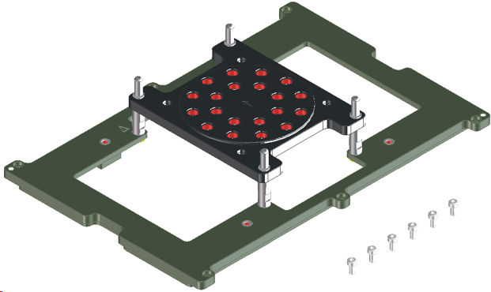
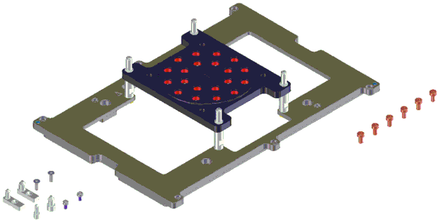

HSSI/RF stiffener inlay plates
| Supported V93000 systems : Smart Scale (SmarTest 7), Pin Scale |
For the high-density Port Scale RF (PSRF) solutions see High-Density Port Scale RF solution.
These are the two separate interface kits for the HSSI and RF options:
- The E7991A-032 is the RF/HSSI Interface Kit and supports all Synax and Seiko Epson handlers except the Seiko-Epson TR55. Blindmate connectors must be ordered in addition to the RF/HSSI Interface Kit. These connectors are supplied in sets of four (product number E5475A-K08).

- The E7991A-033 is the RF/HSSI Interface Kit and supports all Delta handlers, as well as the Multitest 9510, Tesec 9588, and Seiko-Epson TR55 handlers. Blindmate connectors must be ordered in addition to the RF/HSSI Interface Kit. These connectors are supplied in sets of four (product number E5475A-K08).

Functional changes
- Introduced before SmarTest 6.3.2